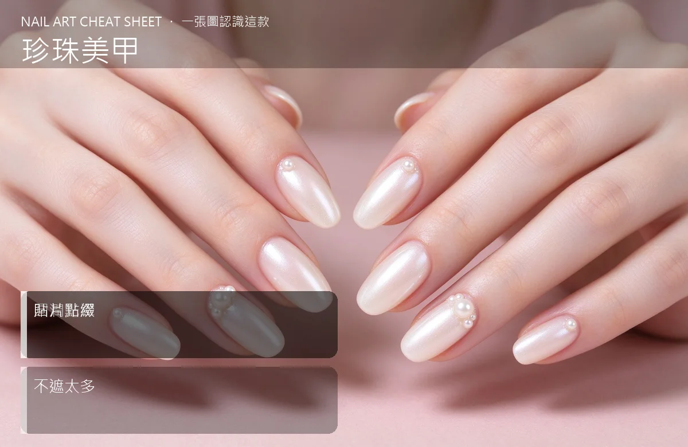

美甲珍珠美甲是什麼？入門入門攻略
珍珠美甲是把指甲做出像珍珠母貝那種溫柔的光暈，氣質滿分。
珍珠美甲原理與辨識重點：美甲師不說的圓潤光澤
珍珠美甲有兩種做法：一種是『珍珠粉』混進色膠裡，整隻手呈現像貝殼內側那種虹彩光；另一種是把『小珍珠飾品』一顆顆貼在甲面上當點綴。前者是『光』，後者是『立體飾品』，常常兩種一起用。
誰適合做珍珠美甲？氣質款對號入座
要當伴娘、參加訂婚、喝喜酒、吃大餐的女生最適合；穿小禮服、針織衫、白襯衫都能搭。本身氣質路線、不想太張揚又想要一點華麗感的人會很愛。
珍珠美甲美甲施作步驟：珍珠粉／珍珠飾
上好裸色或奶白底 → 想要光暈感就薄上一層珍珠粉膠照燈 → 想要立體感就在跳指上用凝膠黏小珍珠、小水鑽 → 壓緊 → 封層把珍珠根部包牢 → 照燈。
珍珠美甲優缺點分析：美甲持久度與傷甲評估
| 優點 | 說明 |
|---|---|
| 氣質柔和、跟婚禮或正式場合襯得起來，拍照時手指會有淡淡的光。 | 是韓系流派的招牌，入門就能上手 |
| 缺點 | 說明 |
| 立體珍珠如果貼不牢容易掉，還會勾絲襪；珍珠粉的光在陽光下才明顯，室內看起來跟一般珠光差不多。 | 前置與珍珠飾品別貼在指尖正中間——那裡最容易敲到、最容易掉。貼在指根或側邊，撐比較久。沒顧好會打折 |

珍珠美甲新手雷區：貼片點綴與常見錯誤
注意：珍珠飾品別貼在指尖正中間——那裡最容易敲到、最容易掉。貼在指根或側邊，撐比較久。
珍珠美甲和其他美甲做法的差別比較
跟『貓眼』不一樣：貓眼是一道會動的光帶，珍珠是整片柔柔的虹彩，比較夢幻、比較女性化。
珍珠美甲美甲常見問題 FAQ
Q：珍珠飾品會不會刮到臉？ A：貼得夠平、封層包牢就不會。怕的話選『半珍珠』或壓扁款，表面比較平滑。
Q：吃飯時珍珠會不會掉？ A：施作當下貼牢、封層包好，吃飯不會掉；但如果本身愛用指尖開罐頭、刮東西，就比較容易鬆。
Q：男生可以做珍珠美甲嗎？ A：可以只做珍珠粉的光暈款，不要貼立體飾品，低調又有質感。